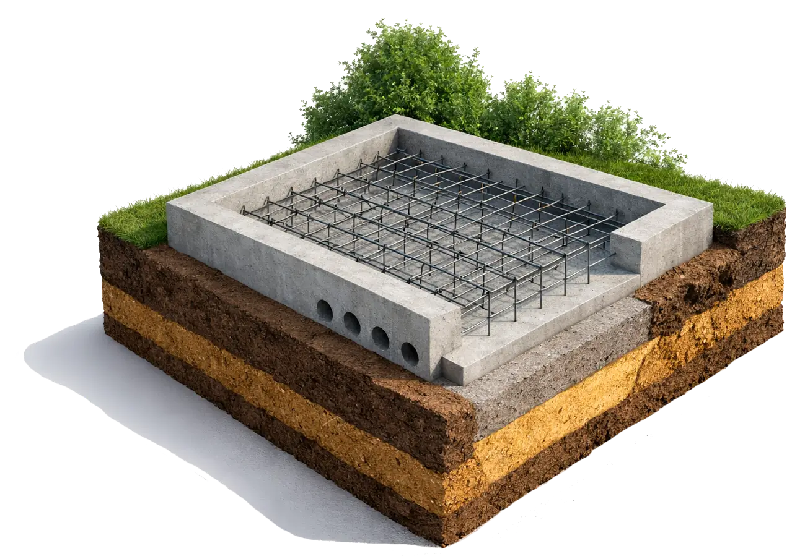

РЕГИОН СТРОЙ МОНОЛИТ · Санкт-ПетербургФундамент.
Фундамент.
Под ваш дом.
Монолитные работы и устройство фундаментов в Санкт-Петербурге и Ленинградской области. Обсудим проект и условия участка, подготовим расчёт.
Рассчитать фундамент
ПРИМЕРЫ РЕШЕНИЙПосмотрите работы.
Посмотрите работы.
Рассмотрите конструкцию.
Опалубка, монолитные стены и основания. Покажем примеры работ и обсудим конструкцию фундамента под ваш проект и участок.
Рассчитать фундамент